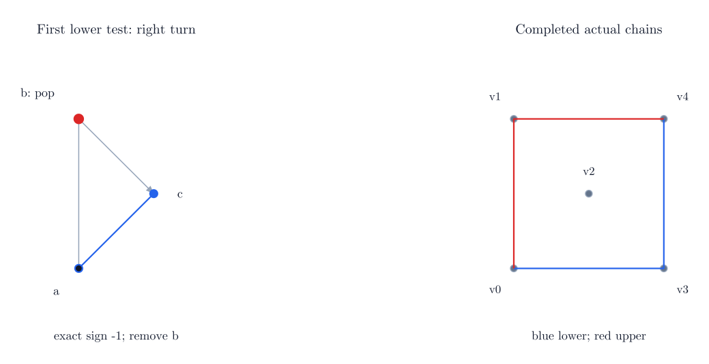
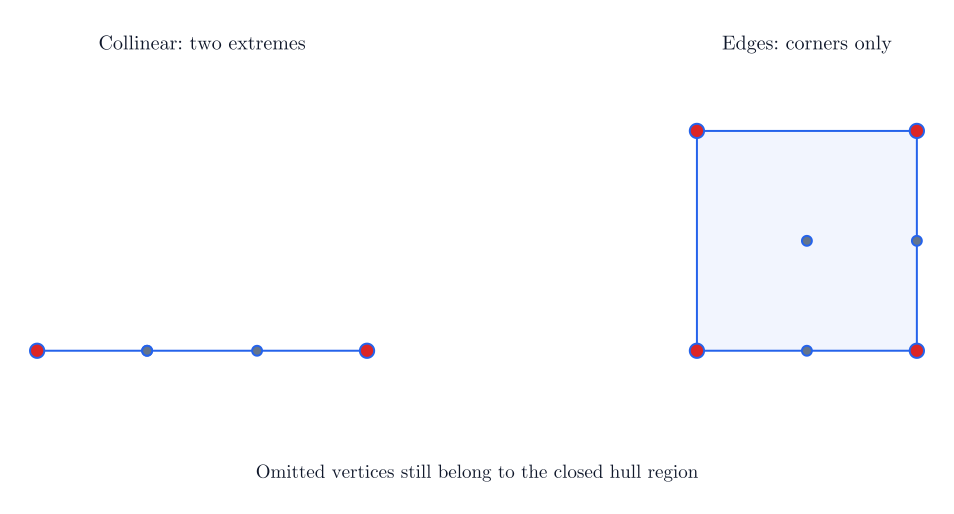
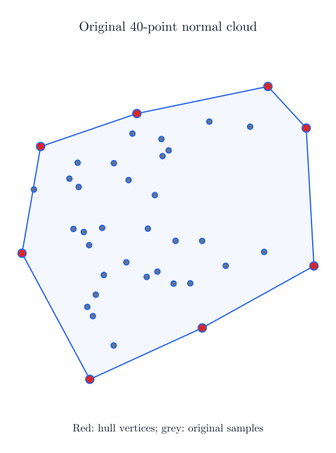
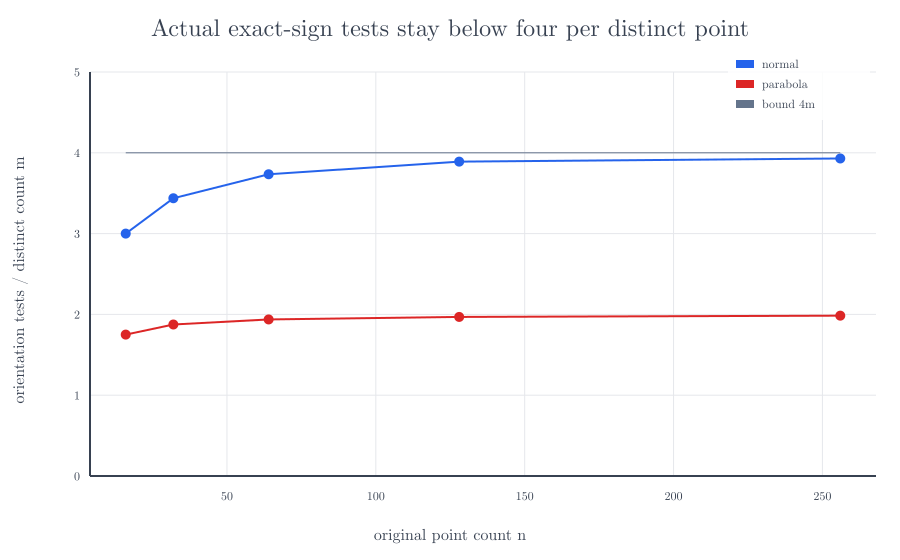

Convex Hull: Two Chains, Exact Turns and Actual Stack Edits
Abstract
Given a finite set of planar points, return the extreme vertices of the smallest convex region containing them, in boundary order. Sorting and local turn tests make the construction simple, but a rounded determinant can erase a genuine corner. This report follows Andrew's two monotone chains from actual native stack events, checks duplicates and collinear boundary points, and reproduces the original square and forty-point cloud. The canonical hull now uses an exact orientation sign for the stored binary64 coordinates, with bounded integer arithmetic rather than a floating tolerance. Actual work counters separate the sorting cost from the linear scans.
The method: sort once, scan twice
The convex hull is the set of convex combinations of the input points. In two dimensions it is a polygon, segment, singleton or empty set. The API returns its extreme vertices: counterclockwise from the lexicographically smallest (x,y), without repeating the first vertex. Collinear edge interiors are omitted from the vertex list but still belong to the closed hull region. This is the API's strict-vertex convention, not a claim that every input lies strictly inside.
After exact-coordinate deduplication, sort by x and then y. Build a lower chain left to right and an upper chain right to left. Before pushing candidate c, inspect the top two stack points a,b using
A positive sign is a left turn. A negative sign is a right turn and zero is collinear. While the sign is nonpositive, pop b and test again; then push c. Join the chains after dropping each chain's last endpoint, which is shared with the other. The exact predicate returns only the sign, not a determinant magnitude.
A right-turn removal and the actual completed chains
Use the sorted points v0=(0,0), v1=(0,2), v2=(1,1), v3=(2,0), v4=(2,2). The lower scan's first test is D(v0,v1,v2)=−2, so v1 is removed from that chain. It remains a vertex of the upper boundary. The centre v2 is later removed from both chains. The first panel draws the actual recorded test; the second draws the producing kernel's completed lower and upper stacks.
#include <dm/dm.hpp>
int main() {
std::filesystem::create_directories("build");
const auto t=dm::geometry::convex_hull_trace({{0,0},{0,2},{1,1},{2,0},{2,2}});
const auto at=std::find_if(t.events.begin(),t.events.end(),[](const auto& e){
return e.pass==dm::geometry::HullPass::lower && e.action==dm::geometry::HullAction::test;
});
const auto a=t.sorted[at->a].point,b=t.sorted[at->b].point,c=t.sorted[at->candidate].point;
dm::graphics::Diagram d(110,1100);
dm::graphics::DiagramStroke old;old.color={148,163,184};old.width=1.5;old.arrow=true;
dm::graphics::DiagramStroke blue;blue.color={37,99,235};blue.width=2.2;
dm::graphics::DiagramStroke red;red.color={220,38,38};red.width=2.2;
d.path({{a.x,a.y},{b.x,b.y},{c.x,c.y}},old)
.path({{a.x,a.y},{c.x,c.y}},blue)
.ellipse({a.x,a.y},.05,.05,{15,23,42},blue)
.ellipse({b.x,b.y},.06,.06,{220,38,38},red)
.ellipse({c.x,c.y},.05,.05,{37,99,235},blue)
.text({a.x-.3,a.y-.3},"a",18).text({b.x-.55,b.y+.35},"b: pop",18)
.text({c.x+.35,c.y},"c",18)
.text({.5,3.2},"First lower test: right turn",20)
.text({.5,-.9},std::format("exact sign {}; remove b",at->turn),18);
for(std::size_t i=0;i<t.sorted.size();++i) {
const auto p=t.sorted[i].point;
d.ellipse({5.8+p.x,p.y},.045,.045,{100,116,139},old)
.text({5.8+p.x+(p.x==0?-.25:p.x==2?.25:0),p.y+(p.y==0?-.28:.3)},std::format("v{}",i),17);
}
std::vector<dm::graphics::DiagramPoint> lower,upper;
for(auto i:t.lower) lower.push_back({5.8+t.sorted[i].point.x,t.sorted[i].point.y});
for(auto i:t.upper) upper.push_back({5.8+t.sorted[i].point.x,t.sorted[i].point.y});
d.path(lower,blue).path(upper,red)
.text({6.8,3.2},"Completed actual chains",20)
.text({6.8,-.9},"blue lower; red upper",18).save_svg("build/hull_chains.svg");
const std::array<std::string_view,3> names{"test","pop","push"};
std::print("| lower event | action | candidate | edited point | tested triple | exact sign | stack size after |\n| ---: | :--- | ---: | ---: | :--- | :--- | ---: |\n");
std::size_t k=0;
for(const auto& e:t.events) if(e.pass==dm::geometry::HullPass::lower) {
const bool test=e.action==dm::geometry::HullAction::test;
std::print("| {} | {} | {} | {} | {} | {} | {} |\n",k++,names[std::size_t(e.action)],e.candidate,e.point,test?std::format("({}, {}, {})",e.a,e.b,e.candidate):"none",test?std::to_string(e.turn):"none",e.stack_size);
}
std::print("\n{} exact tests, {} pushes and {} pops across both passes. {} retained hull vertices.\n",t.analysis.work.orientation_tests,t.analysis.work.pushes,t.analysis.work.pops,t.analysis.hull.size());
}| lower event | action | candidate | edited point | tested triple | exact sign | stack size after |
|---|---|---|---|---|---|---|
| 0 | push | 0 | 0 | none | none | 1 |
| 1 | push | 1 | 1 | none | none | 2 |
| 2 | test | 2 | 2 | (0, 1, 2) | -1 | 2 |
| 3 | pop | 2 | 1 | none | none | 1 |
| 4 | push | 2 | 2 | none | none | 2 |
| 5 | test | 3 | 3 | (0, 2, 3) | -1 | 2 |
| 6 | pop | 3 | 2 | none | none | 1 |
| 7 | push | 3 | 3 | none | none | 2 |
| 8 | test | 4 | 4 | (0, 3, 4) | 1 | 2 |
| 9 | push | 4 | 4 | none | none | 3 |
6 exact tests, 10 pushes and 4 pops across both passes. 4 retained hull vertices.

Why do local pops suffice? With points processed in lexicographic order, a non-left turn puts b on or above the shortcut from a to c, so b cannot be a necessary vertex of the current lower convex envelope. Popping until all retained turns are left turns restores that envelope invariant. Induction over the sorted points gives the full lower boundary; reversing the order gives the upper one. Their union is convex and encloses every input point. Every retained corner is an input extreme point, so the polygon is the smallest enclosing convex region. The same nonpositive rule retains only extreme endpoints of a collinear chain.
Duplicates and lower-dimensional hulls
Empty input returns no vertices. One distinct point returns that point. Two points return sorted endpoints, and any larger collinear set returns its two extremes. The vertex list is unclosed: a segment has two entries, not an artificial three-point polygon. Duplicate coordinates, including signed zeros, keep the earliest matching original identity and its coordinate representation.
#include <dm/dm.hpp>
int main() {
std::filesystem::create_directories("build");
const std::vector<std::pair<std::string,std::vector<dm::geometry::Point2D>>> cases{
{"empty",{}},{"one distinct",{{2,3},{2,3}}},{"two unsorted",{{3,0},{0,0}}},
{"collinear with duplicate",{{0,0},{1,0},{2,0},{3,0},{1,0}}},
{"edge and interior points",{{6,0},{8,0},{8,2},{6,2},{7,0},{8,1},{7,1},{6,0}}}
};
std::print("| case | records | distinct | hull vertices | earliest original indices in hull order |\n| :--- | ---: | ---: | ---: | :--- |\n");
for(const auto& [name,p]:cases) {
const auto a=dm::geometry::convex_hull_analyze(p);
std::string ids;for(auto i:a.input_indices) ids+=std::format("{}{}",ids.empty()?"":", ",i);
std::print("| {} | {} | {} | {} | {} |\n",name,p.size(),a.work.distinct_points,a.hull.size(),ids.empty()?"none":ids);
}
dm::graphics::Diagram d(110,1100);
dm::graphics::DiagramStroke blue;blue.color={37,99,235};blue.width=2;
for(std::size_t index:{3,4}) {
const auto& p=cases[index].second;const auto h=dm::geometry::convex_hull(p);
std::vector<dm::graphics::DiagramPoint> outline;
for(const auto& v:h) outline.push_back({v.x,v.y});
if(h.size()==2) d.path(outline,blue);else d.polygon(outline,{37,99,235,.06},blue);
for(const auto& v:p) d.ellipse({v.x,v.y},.045,.045,{100,116,139},blue);
for(const auto& v:h) d.ellipse({v.x,v.y},.065,.065,{220,38,38},blue);
}
d.text({1.5,2.8},"Collinear: two extremes",20)
.text({7,2.8},"Edges: corners only",20)
.text({4,-1.1},"Omitted vertices still belong to the closed hull region",19)
.save_svg("build/hull_degeneracies.svg");
}| case | records | distinct | hull vertices | earliest original indices in hull order |
|---|---|---|---|---|
| empty | 0 | 0 | 0 | none |
| one distinct | 2 | 1 | 1 | 0 |
| two unsorted | 2 | 2 | 2 | 1, 0 |
| collinear with duplicate | 5 | 4 | 2 | 0, 3 |
| edge and interior points | 8 | 7 | 4 | 0, 1, 2, 3 |

Original examples: seven square points and the unsnapped cloud
The original seven-point example returns (0,0), (4,0), (4,4), (0,4), excluding its three interior points. Its source identities are 0,1,2,3. For the random example, sample_gaussian_points preserves the original local mt19937 seed 20240728 and normal_distribution call order, drawing x then y from the same cached distribution. It does not use the separate PointCloud::Gaussian generator, which uses a different engine and rounds coordinates to a grid.
#include <dm/dm.hpp>
int main() {
std::filesystem::create_directories("build");
const auto square=dm::geometry::convex_hull_analyze({{0,0},{4,0},{4,4},{0,4},{2,2},{1,3},{3,1}});
std::print("| original square vertex | earliest input index |\n| :--- | ---: |\n");
for(std::size_t i=0;i<square.hull.size();++i)
std::print("| ({:.0f},{:.0f}) | {} |\n",square.hull[i].x,square.hull[i].y,square.input_indices[i]);
const auto cloud=dm::geometry::sample_gaussian_points();
const auto a=dm::geometry::convex_hull_analyze(cloud);
std::print("\nOriginal cloud: {} points -> {} hull vertices.\n\n",cloud.size(),a.hull.size());
std::print("| hull order | input index | x | y |\n| ---: | ---: | ---: | ---: |\n");
for(std::size_t i=0;i<a.hull.size();++i)
std::print("| {} | {} | {:.6f} | {:.6f} |\n",i,a.input_indices[i],a.hull[i].x,a.hull[i].y);
dm::graphics::Diagram d(125,900);
dm::graphics::DiagramStroke edge;edge.color={37,99,235};edge.width=2;
std::vector<dm::graphics::DiagramPoint> outline;
for(const auto& p:a.hull) outline.push_back({p.x,p.y});
d.polygon(outline,{37,99,235,.05},edge);
for(const auto& p:cloud) d.ellipse({p.x,p.y},.035,.035,{100,116,139},edge);
for(const auto& p:a.hull) d.ellipse({p.x,p.y},.055,.055,{220,38,38},edge);
const auto [low,high]=std::minmax_element(cloud.begin(),cloud.end(),[](auto p,auto q){return p.y<q.y;});
const auto [left,right]=std::minmax_element(cloud.begin(),cloud.end(),[](auto p,auto q){return p.x<q.x;});
const double centre=(left->x+right->x)/2;
d.text({centre,high->y+.8},"Original 40-point normal cloud",22)
.text({centre,low->y-.65},"Red: hull vertices; grey: original samples",18)
.save_svg("build/convex_hull.svg");
}| original square vertex | earliest input index |
|---|---|
| (0,0) | 0 |
| (4,0) | 1 |
| (4,4) | 2 |
| (0,4) | 3 |
Original cloud: 40 points -> 8 hull vertices.
| hull order | input index | x | y |
|---|---|---|---|
| 0 | 39 | -1.831598 | -0.292127 |
| 1 | 7 | -0.924948 | -1.975080 |
| 2 | 16 | 0.580365 | -1.288770 |
| 3 | 26 | 2.075783 | -0.461395 |
| 4 | 15 | 1.972302 | 1.379471 |
| 5 | 35 | 1.459736 | 1.935340 |
| 6 | 33 | -0.294532 | 1.574090 |
| 7 | 19 | -1.582805 | 1.133178 |

The entire sampled stream and hull agree with the former report's generator and algorithm on this build. A seed does not guarantee identical normal variates across C++ standard libraries. The coordinates are unsnapped; exact orientation classifies the stored double values without pretending they are unrounded real observations. No external dataset is needed to check these geometric examples.
Checking the linear scans and sorting cost
Let n be the original count, m the distinct count and h the hull size. Sorting costs O(n log n) comparisons, then deduplication is linear. For m≥2 each of the two separate scans pushes every distinct point once. A point can be popped at most once per pass. The final chain lengths add to h+2, so the exact stack identity is
Every nonpositive orientation test causes a pop. Each candidate causes at most one final positive test, so fewer than 4m orientation tests suffice across both scans. Compact test/pop/push events therefore use O(m) storage; copying every full intermediate stack would instead risk quadratic trace storage.
#include <dm/dm.hpp>
int main() {
std::filesystem::create_directories("build");
std::vector<double> sizes,normal_tests,parabola_tests,bound;
std::print("| cloud | original n | distinct m | hull h | sort comparisons | exact tests | pushes | pops | peak chain |\n| :--- | ---: | ---: | ---: | ---: | ---: | ---: | ---: | ---: |\n");
for(int n:{16,32,64,128,256}) {
const auto gaussian=dm::geometry::convex_hull_analyze(dm::geometry::sample_gaussian_points(n));
const auto parabola=dm::geometry::convex_hull_analyze(dm::geometry::random_point_cloud(n,dm::geometry::PointCloud::Parabola,17));
for(const auto& [name,a]:std::array<std::pair<std::string_view,dm::geometry::ConvexHullAnalysis>,2>{{{"normal",gaussian},{"parabola",parabola}}}) {
const auto& w=a.work;
std::print("| {} | {} | {} | {} | {} | {} | {} | {} | {} |\n",name,n,w.distinct_points,a.hull.size(),w.sort_comparisons,w.orientation_tests,w.pushes,w.pops,w.max_stack);
if(w.pushes!=2*w.distinct_points || w.pops!=2*w.distinct_points-a.hull.size()-2 || w.orientation_tests>=4*w.distinct_points) return 1;
}
if(parabola.hull.size()!=std::size_t(n)) return 1;
sizes.push_back(n);normal_tests.push_back(double(gaussian.work.orientation_tests)/gaussian.work.distinct_points);
parabola_tests.push_back(double(parabola.work.orientation_tests)/parabola.work.distinct_points);bound.push_back(4);
}
auto plot=dm::graphics::RPlot::create();
plot.line(sizes,normal_tests,"normal",{37,99,235},2).points(sizes,normal_tests,"",{37,99,235},5)
.line(sizes,parabola_tests,"parabola",{220,38,38},2).points(sizes,parabola_tests,"",{220,38,38},5)
.line(sizes,bound,"bound 4m",{100,116,139},1)
.legend({"normal","parabola","bound 4m"},{{37,99,235},{220,38,38},{100,116,139}})
.title("Actual exact-sign tests stay below four per distinct point")
.x_label("original point count n").y_label("orientation tests / distinct count m")
.y_limits(0,5).size(900,560).save_svg("build/hull_work.svg");
}| cloud | original n | distinct m | hull h | sort comparisons | exact tests | pushes | pops | peak chain |
|---|---|---|---|---|---|---|---|---|
| normal | 16 | 16 | 7 | 64 | 48 | 32 | 23 | 6 |
| parabola | 16 | 16 | 16 | 85 | 28 | 32 | 14 | 16 |
| normal | 32 | 32 | 8 | 199 | 110 | 64 | 54 | 8 |
| parabola | 32 | 32 | 32 | 207 | 60 | 64 | 30 | 32 |
| normal | 64 | 64 | 7 | 456 | 239 | 128 | 119 | 7 |
| parabola | 64 | 64 | 64 | 440 | 124 | 128 | 62 | 64 |
| normal | 128 | 128 | 8 | 1034 | 498 | 256 | 246 | 9 |
| parabola | 128 | 128 | 128 | 1022 | 252 | 256 | 126 | 128 |
| normal | 256 | 256 | 8 | 2551 | 1006 | 512 | 502 | 9 |
| parabola | 256 | 256 | 256 | 2459 | 508 | 512 | 254 | 256 |

The overall upper bound is O(n log n) comparison work plus linear exact-sign calls, with O(n) scratch/output storage. Binary64 inputs have a fixed word size, so the bounded integer predicate contributes a fixed arithmetic cost per call. Sorting can be reduced to worst-case hull construction by placing distinct keys on y=x² and reading their lower boundary in order. This motivates the familiar comparison-model worst-case lower bound, not a claim that every small-hull input requires that much work or that comparison sorting is optimal in every word-RAM model. Output-sensitive alternatives can exploit small h.
Exact signs and numerical limits
A finite binary64 coordinate is a signed integer mantissa times a power of two. Expand the determinant into six coordinate products, grouping positive and negative terms. Scaling them all by 2^2148 makes them integers. Each scaled product needs at most 4196 bits; even six same-sign terms need at most 4199 bits. Two 132-word arrays, each holding 4224 bits, therefore suffice to sum and compare the two sides without floating multiplication, overflow or underflow. This is a fixed dyadic-integer implementation, not Shewchuk's adaptive expansion algorithm. The cited robustness work motivates the distinction between a rounded determinant and its exact sign.
For a visible cancellation control, set M=2^52, a=(0,0), b=(M,M−1), c=(M+1,M). The exact determinant is M²−(M−1)(M+1)=1, although separately rounded double products can cancel to zero. All three points must remain hull vertices.
#include <dm/dm.hpp>
int main() {
using P=dm::geometry::Point2D;
const double m=std::ldexp(1.,52),tiny=std::numeric_limits<double>::denorm_min(),huge=std::numeric_limits<double>::max();
const std::vector<std::pair<std::string,std::array<P,3>>> cases{
{"unit left turn",{{{0,0},{1,0},{0,1}}}},
{"cancellation determinant 1",{{{0,0},{m,m-1},{m+1,m}}}},
{"subnormal triangle",{{{0,0},{tiny,0},{0,tiny}}}},
{"huge collinear triple",{{{-huge,-huge},{huge,huge},{0,0}}}}
};
std::print("| represented triple | old double determinant | exact sign |\n| :--- | :--- | ---: |\n");
for(const auto& [name,p]:cases) {
const auto approximate=dm::geometry::cross(p[0],p[1],p[2]);
std::print("| {} | {} | {} |\n",name,std::isfinite(approximate)?std::format("{:.3e}",approximate):"nonfinite",dm::geometry::orientation_sign(p[0],p[1],p[2]));
}
std::print("\nCancellation control hull vertices: {}.\n",dm::geometry::convex_hull({{0,0},{m,m-1},{m+1,m}}).size());
const auto exact=dm::geometry::convex_hull_trace({{0,0},{1,0}},{2,4});
std::print("Two-point trace uses {} actual events.\n",exact.events.size());
try { (void)dm::geometry::convex_hull_trace({{0,0},{1,0}},{2,3});return 1; }
catch(const std::length_error&) {std::print("One-below actual event cap is rejected.\n");}
try { (void)dm::geometry::convex_hull_trace({{0,0},{1,1},{std::numeric_limits<double>::quiet_NaN(),2}},{1,1});return 1; }
catch(const std::invalid_argument&) {std::print("All coordinates validate before point/event caps, including a late NaN.\n");}
}| represented triple | old double determinant | exact sign |
|---|---|---|
| unit left turn | 1.000e+00 | 1 |
| cancellation determinant 1 | 0.000e+00 | 1 |
| subnormal triangle | 0.000e+00 | 1 |
| huge collinear triple | nonfinite | 0 |
Cancellation control hull vertices: 3. Two-point trace uses 4 actual events. One-below actual event cap is rejected. All coordinates validate before point/event caps, including a late NaN.
Exactness applies to the coordinates actually stored in Point2D. It cannot recover information lost before conversion to double or account for measurement error. Nonfinite coordinates are rejected before internal indexed copies, sorting or optional complete-work caps. The legacy by-value call still performs its argument copy at the call boundary. Positive max_points counts original records, including duplicates; max_events counts actual compact records online. Zero means unlimited, and analysis ignores the optional event cap.
The original cross(), squared_distance() and distance() primitives retain their double arithmetic and documented range limitations. This change makes the canonical monotone-chain hull and orientation_sign exact in their combinatorial turn decisions; it does not upgrade every other geometry algorithm or make SVG coordinates exact at arbitrary extreme scales. The largest cancellation example is shown numerically because its half-unit triangle area is not visible at that coordinate scale in a normal floating drawing.
Independent native checks enumerate all 512 subsets of a three-by-three grid, 6,561 ordered four-record grid tuples and 1,000 seeded integer clouds against a supporting-edge oracle. Actual edits, source identities and scan counts are checked separately. A repeatable optional CTest oracle uses Python's standard Fraction arithmetic for 20,000 raw-binary64 or near-collinear triples, including one-working-ULP perturbations; it requires no numerical package or binding.
Conclusion
Two exact-sign chain scans return the extreme vertices and retain the original square and seeded-cloud results. Actual stack records expose why points disappear from one chain, while degeneracy controls distinguish omitted vertices from points outside the hull. The numerical controls demonstrate why a double-valued cross product alone does not establish robustness. Bounded exact dyadic arithmetic supplies that sign guarantee for finite binary64 input, with explicit identities, limits and measured work.
References
- A. M. Andrew (1979), Another efficient algorithm for convex hulls in two dimensions, Information Processing Letters 9(5), 216–219. [Publisher record](https://www.sciencedirect.com/science/article/abs/pii/0020019079900723), [DOI](https://doi.org/10.1016/0020-0190(79)90072-3).
- J. R. Shewchuk (1997), Adaptive Precision Floating-Point Arithmetic and Fast Robust Geometric Predicates, Discrete & Computational Geometry 18(3), 305–363. [Author's paper](https://people.eecs.berkeley.edu/~jrs/papers/robustr.pdf). The current predicate uses fixed integer sums rather than that paper's adaptive implementation.
- [C++ normal_distribution specification](https://eel.is/c++draft/rand.dist.norm.normal), for the original standard-normal distribution interface. Preserving engine, seed and call order reproduces this build, without promising portable normal variates across standard libraries.